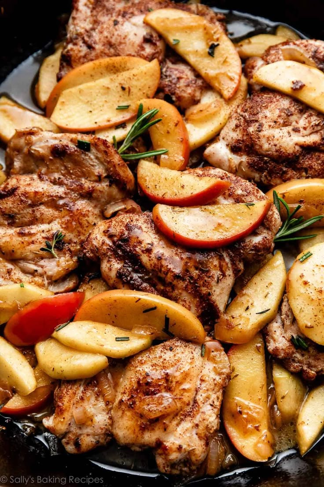

Skillet Apple Cider Chicken

Description:
This is a hearty meal mainly made out of chicken and packed
with protein.It is also easy to prepare and quick to cook
making it a good meal for lazy evenings or when a quick snack is needed
Ingredients
(These yield six servings)
- 6 skinless,boneless chicken thighs
- 1 teaspoon salt
- 6 strips bacon
- 1 onion sliced
- 2 cups broth
- 2 cups apple cider
- 2 apples peeled and sliced
- 4 sage leaves
- 2 sprigs fresh thyme
- 4 tablespoons butter
Steps
- Season the chicken thigh with salt and set it aside
- Heat oil in a large skillet over medium heat
.Add thighs; cook until browned on both sides,7-10mins
.Transfer to a plate; set aside.
- Cook bacon in the skillet over medium to high heat
,turning occasionally, until evenly browned, about ten minutes.
Drain on paper towels;drain excess grease from skillet.
-
Cook onion in the skillet over medium heat until soft, 5 to 7 minutes.
Add 1 cup chicken broth and 1 cup apple cider; cook until reduced by half, about 10 minutes.
Add cooked bacon, apples, sage, and thyme; simmer for 2 minutes.
Add remaining 1 cup each chicken broth and apple cider.
- Return chicken thighs to the skillet; reduce heat to medium-low.
Cook and stir until thighs are no longer pink in the centers, about 15 minutes.
-
Transfer thighs to a serving platter. Remove skillet from heat; add butter, swirl to combine with sauce.
Pour sauce over thighs.
Home